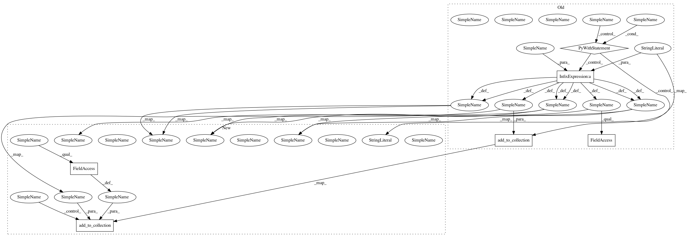

811d018ccb0cc49ce7c3b3b37849bff07c865761,tflearn/layers/conv.py,,highway_conv_1d,#,1140
Before Change
tf.add_to_collection(tf.GraphKeys.LAYER_VARIABLES + "/" + scope, b)
// Weight and bias for the transform gate
with tf.name_scope("transform_gate") as transform_gate:
W_T = vs.variable(transform_gate + "W", shape=nb_filter,
regularizer=None, initializer=W_init,
trainable=trainable, restore=restore)
tf.add_to_collection(tf.GraphKeys.LAYER_VARIABLES + "/" +
transform_gate, W_T)
b_T = vs.variable(transform_gate + "b", shape=nb_filter,
initializer=tf.constant_initializer(-3),
trainable=trainable, restore=restore)
tf.add_to_collection(tf.GraphKeys.LAYER_VARIABLES + "/" +
transform_gate, b_T)
if isinstance(activation, str):
activation = activations.get(activation)
elif hasattr(activation, "__call__"):
activation = activation
else:
raise ValueError("Invalid Activation.")
// Adding dummy dimension to fit with Tensorflow conv2d
inference = tf.expand_dims(incoming, 2)
//shared convolution for gating
convolved = tf.nn.conv2d(inference, W, strides, padding)
H = activation(tf.squeeze(convolved + b, [2]))
T = tf.sigmoid(tf.squeeze(tf.mul(convolved, W_T) + b_T, [2]))
C = tf.sub(1.0, T)
Q = tf.mul(H, T)
R = tf.mul(tf.squeeze(convolved, [2]), C)
inference = tf.add(Q, R)
// Track activations.
tf.add_to_collection(tf.GraphKeys.ACTIVATIONS, inference)
// Add attributes to Tensor to easy access weights.
inference.scope = scope
inference.W = W
inference.W_T = W_T
inference.b = b
inference.b_T = b_T
After Change
padding = utils.autoformat_padding(padding)
with tf.variable_op_scope([incoming], scope, name, reuse=reuse) as scope:
name = scope.name
W_init = weights_init
if isinstance(weights_init, str):
W_init = initializations.get(weights_init)()
W_regul = None
if regularizer:
W_regul = lambda x: losses.get(regularizer)(x, weight_decay)
W = vs.variable("W", shape=filter_size,
regularizer=W_regul, initializer=W_init,
trainable=trainable, restore=restore)
// Track per layer variables
tf.add_to_collection(tf.GraphKeys.LAYER_VARIABLES + "/" + name, W)
b_init = initializations.get(bias_init)()
b = vs.variable("b", shape=nb_filter,
initializer=b_init, trainable=trainable,
restore=restore)
// Track per layer variables
tf.add_to_collection(tf.GraphKeys.LAYER_VARIABLES + "/" + name, b)
// Weight and bias for the transform gate
W_T = vs.variable("W_T", shape=nb_filter,
regularizer=None, initializer=W_init,
trainable=trainable, restore=restore)
tf.add_to_collection(tf.GraphKeys.LAYER_VARIABLES + "/" + name, W_T)
b_T = vs.variable("b_T", shape=nb_filter,
initializer=tf.constant_initializer(-3),
trainable=trainable, restore=restore)
tf.add_to_collection(tf.GraphKeys.LAYER_VARIABLES + "/" + name, b_T)
if isinstance(activation, str):
activation = activations.get(activation)
elif hasattr(activation, "__call__"):
activation = activation
else:
raise ValueError("Invalid Activation.")
// Adding dummy dimension to fit with Tensorflow conv2d
inference = tf.expand_dims(incoming, 2)
// Shared convolution for gating
convolved = tf.nn.conv2d(inference, W, strides, padding)
H = activation(tf.squeeze(convolved + b, [2]))
T = tf.sigmoid(tf.squeeze(tf.mul(convolved, W_T) + b_T, [2]))
C = tf.sub(1.0, T)
Q = tf.mul(H, T)
R = tf.mul(tf.squeeze(convolved, [2]), C)
inference = tf.add(Q, R)
// Track activations.
tf.add_to_collection(tf.GraphKeys.ACTIVATIONS, inference)
In pattern: SUPERPATTERN
Frequency: 4
Non-data size: 6
Instances
Project Name: tflearn/tflearn
Commit Name: 811d018ccb0cc49ce7c3b3b37849bff07c865761
Time: 2016-06-23
Author: aymeric.damien@gmail.com
File Name: tflearn/layers/conv.py
Class Name:
Method Name: highway_conv_1d
Project Name: tflearn/tflearn
Commit Name: 811d018ccb0cc49ce7c3b3b37849bff07c865761
Time: 2016-06-23
Author: aymeric.damien@gmail.com
File Name: tflearn/layers/core.py
Class Name:
Method Name: highway
Project Name: tflearn/tflearn
Commit Name: 811d018ccb0cc49ce7c3b3b37849bff07c865761
Time: 2016-06-23
Author: aymeric.damien@gmail.com
File Name: tflearn/layers/conv.py
Class Name:
Method Name: highway_conv_1d